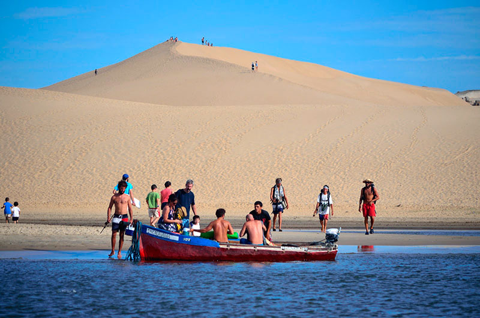

Ubicación
La Pedrera
la pedrera se encuentra en el deparrtamento de rocha, aqui podras ir a las hermosas playas o ir al centro del pueblo donde hay mucha actividad social y tambien en los alrededores hay muchos lugares interesantes que visitar
Destinos cercanos!



a alrededor de 40 o mas km de distancia,valizas ofrece poder visitar las dunas mas grandes de la region con hermosas vistas de sus alrededores
cabo polonio es un pueblo conocido por su emblematico faro, varias personas vienen aqui para apreciar su fauna de lobos marinos y de noche tiene una posicion privilegiada para obvervar las estrellas
un antigo fuerte de la epoca post colonial, es el segundo fuerte que quedo en uruguay construido por los españoles y disputado por las fuerzas portugesas en aquel entonces